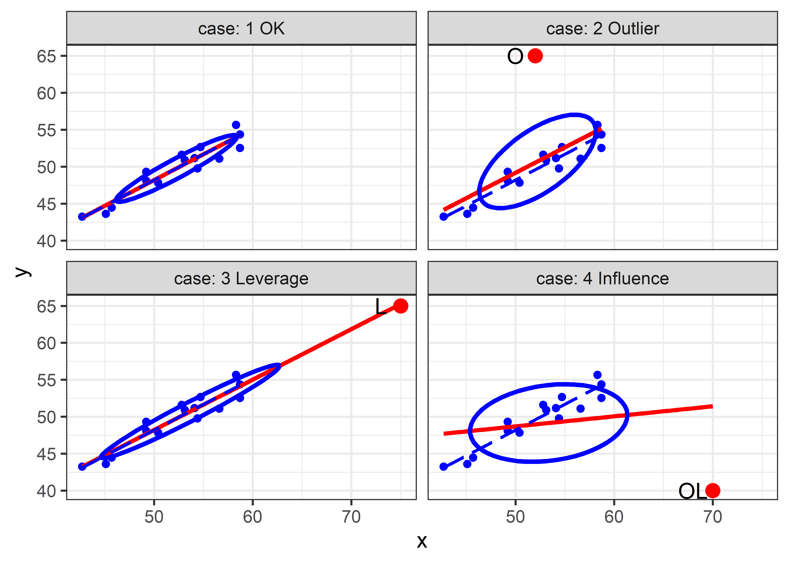
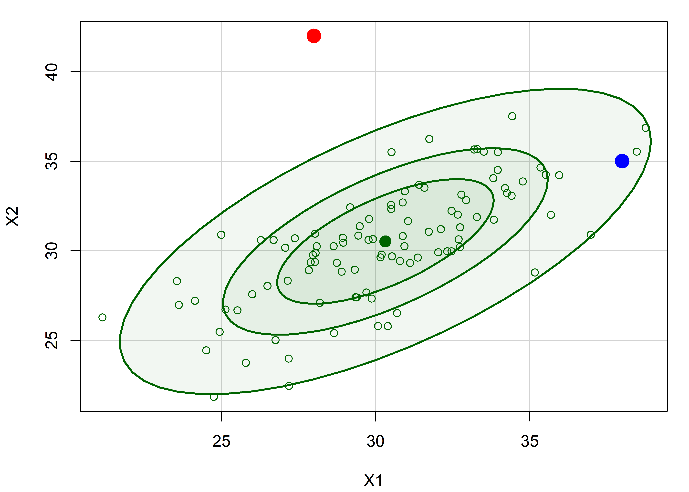
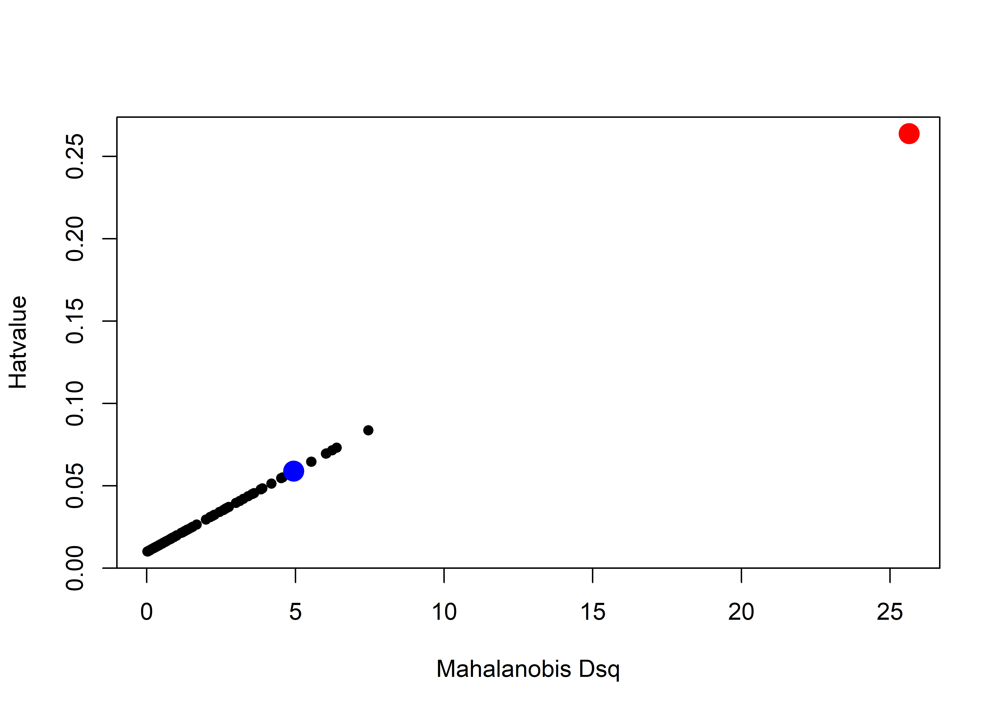

For a univariate linear model fit using lm(), glm() and similar functions, the standard plot() method gives basic versions of diagnostic plots of residuals and other calculated quantities for assessing possible violations of the model assumptions. Some of these can be considerably enhanced using other packages.
Beyond this,
tables of model coefficients, standard errors and test statistics can often be usefully supplemented or even replaced by suitable plots providing essentially the same information.
when there are two or more predictors, you can more easily understand their separate impact on the response by plotting the marginal effects of one or more focal variables, averaging over other variables not shown in a given plot.
when there are highly correlated predictors, some specialized plots are useful to understand the nature of multicolinearity.
The classic reference on regression diagnostics is Belsley et al. (1980). My favorite modern texts are the brief Fox (2020) and the more complete Fox & Weisberg (2018), both of which are supported by the car package (Fox et al., 2023).
6.1 The “regression quartet”
For a fitted model, plotting the model object with plot(model) provides for any of six basic plots, of which four are produced by default, giving rise to the term regression quartet for this collection. These are:
Residuals vs. Fitted: For well-behaved data, the points should hover around a horizontal line at residual = 0, with no obvious pattern or trend.
Normal Q-Q plot: A plot of sorted standardized residuals \(e_i\) (obtained from
rstudent(model)) against the theoretical values those values would have in a standard normal \(\mathcal{N}(0, 1)\) distribution.Scale-Location: Plots the square-root of the absolute values of the standardized residuals \(\sqrt{| e_i |}\) as a measure of “scale” against the fitted values \(\hat{y}_i\) as a measure of “location”. This provides an assessment of homogeneity of variance, which appears as a tendency for scale to vary with location.
Residuals vs. Leverage: Plots standardized residuals against leverage to help identify possibly influential observations. Leverage, or “hat” values (given by
hat(model)) are proportional to the squared Mahalanobis distances of the predictor values \(\mathbf{x}_i\) from the means, and measure the potential of an observation to change the fitted coefficients if that observation was deleted. Actual influence is measured by Cooks’s distance (cooks.distance(model)) and is proportional to the product of residual times leverage. Contours of constant Cook’s \(D\) are added to the plot.
One key feature of these plots is providing reference lines or smoothed curves for ease of judging the extent to which a plot conforms to the expected pattern; another is the labeling of observations which deviate from an assumption.
The base-R plot(model) plots are done much better in a variety of packages. I illustrate some versions from the car (Fox et al., 2023) and performance (Lüdecke et al., 2021) packages, part of the easystats (Lüdecke et al., 2022) suite of packages.
Packages:
Example: Duncan’s occupational prestige
In a classic study in sociology, Duncan (1961) used data from the U.S. Census in 1950 to study how one could predict the prestige of occupational categories — which is hard to measure — from available information in the census for those occupations. His data is available in carData:Duncan, and contains
-
type: the category of occupation, one ofprof(professional),wc(white collar) orbc(blue collar); -
income: the percentage of occupational incumbents with a reported income > $3500 (about $40,000 in current dollars); -
education: the percentage of occupational incumbents who were high school graduates; -
prestige: the percentage of respondents in a social survey who rated the occupation as “good” or better in prestige.
These variables are a bit quirky in they are measured in percents, 0-100, rather dollars for income and years for education, but this common scale permitted Duncan to ask an interesting sociological question: Assuming that both income and education predict prestige, are they equally important, as might be assessed by testing the hypothesis \(H_0: \beta_{\text{income}} = \beta_{\text{education}}\).
A quick look at the data shows the variables and a selection of the occupational categories, which are the row.names() of the dataset.
data(Duncan, package = "carData")
set.seed(42)
car::some(Duncan)
#> type income education prestige
#> accountant prof 62 86 82
#> professor prof 64 93 93
#> engineer prof 72 86 88
#> factory.owner prof 60 56 81
#> store.clerk wc 29 50 16
#> carpenter bc 21 23 33
#> machine.operator bc 21 20 24
#> barber bc 16 26 20
#> soda.clerk bc 12 30 6
#> janitor bc 7 20 8Let’s start by fitting a simple model using just income and education as predictors. The results look very good! Both income and education are highly significant and the \(R^2 = 0.828\) for the model indicates that prestige is very well predicted by just these variables.
duncan.mod <- lm(prestige ~ income + education, data=Duncan)
summary(duncan.mod)
#>
#> Call:
#> lm(formula = prestige ~ income + education, data = Duncan)
#>
#> Residuals:
#> Min 1Q Median 3Q Max
#> -29.54 -6.42 0.65 6.61 34.64
#>
#> Coefficients:
#> Estimate Std. Error t value Pr(>|t|)
#> (Intercept) -6.0647 4.2719 -1.42 0.16
#> income 0.5987 0.1197 5.00 1.1e-05 ***
#> education 0.5458 0.0983 5.56 1.7e-06 ***
#> ---
#> Signif. codes: 0 '***' 0.001 '**' 0.01 '*' 0.05 '.' 0.1 ' ' 1
#>
#> Residual standard error: 13.4 on 42 degrees of freedom
#> Multiple R-squared: 0.828, Adjusted R-squared: 0.82
#> F-statistic: 101 on 2 and 42 DF, p-value: <2e-16Beyond this, Duncan was interested in the coefficients and whether income and education could be said to have equal impacts on predicting occupational prestige. A nice display of model coefficients with confidence intervals is provided by parameters::model_parameters() and we can test Duncan’s hypothesis with car::linearHypothesis(). The latter is constructed as a test of a restricted model in which the two coefficients are forced to be equal against the unrestricted model. Duncan was very happy with this result.
parameters::model_parameters(duncan.mod)
#> Parameter | Coefficient | SE | 95% CI | t(42) | p
#> ------------------------------------------------------------------
#> (Intercept) | -6.06 | 4.27 | [-14.69, 2.56] | -1.42 | 0.163
#> income | 0.60 | 0.12 | [ 0.36, 0.84] | 5.00 | < .001
#> education | 0.55 | 0.10 | [ 0.35, 0.74] | 5.56 | < .001
car::linearHypothesis(duncan.mod, "income = education")
#>
#> Linear hypothesis test:
#> income - education = 0
#>
#> Model 1: restricted model
#> Model 2: prestige ~ income + education
#>
#> Res.Df RSS Df Sum of Sq F Pr(>F)
#> 1 43 7519
#> 2 42 7507 1 12.2 0.07 0.8But, should Duncan be so happy? It is unlikely that he ran any model diagnostics or plotted his model; we do so now. Here is the regression quartet for this model. Each plot shows some trend lines, and importantly, labels some observations that stand out and might deserve attention.
Example: Occupational prestige
CUT THIS EXAMPLE
These examples use the data on the prestige of 102 occupational categories and other measures from the 1971 Canadian Census, recorded in carData::Prestige. Our interest is in understanding how prestige (the Pineo-Ported prestige score, from a social survey) is related to census measures of the average education, income, percent women of incumbents in those occupations. Occupation type is a factor with levels "bc" (blue collar), "wc" (white collar) and "prof" (professional). TODO: These data should be introduced earlier with descriptive plots, scatterplots, …
data(Prestige, package="carData")
# `type` is really an ordered factor. Make it so.
Prestige$type <- ordered(Prestige$type,
levels=c("bc", "wc", "prof"))
str(Prestige)
#> 'data.frame': 102 obs. of 6 variables:
#> $ education: num 13.1 12.3 12.8 11.4 14.6 ...
#> $ income : int 12351 25879 9271 8865 8403 11030 8258 14163 11377 11023 ...
#> $ women : num 11.16 4.02 15.7 9.11 11.68 ...
#> $ prestige : num 68.8 69.1 63.4 56.8 73.5 77.6 72.6 78.1 73.1 68.8 ...
#> $ census : int 1113 1130 1171 1175 2111 2113 2133 2141 2143 2153 ...
#> $ type : Ord.factor w/ 3 levels "bc"<"wc"<"prof": 3 3 3 3 3 3 3 3 3 3 ...We fit a main-effects model using all predictors (ignoring census, the Canadian Census occupational code):
prestige.mod <- lm(prestige ~ education + income + women + type,
data=Prestige)plot(model) produces four separate plots. For a quick look, I like to arrange them in a single 2x2 figure.
6.2 Other Diagnostic plots
6.2.1 Spread-level plot
6.3 Coefficient plots
6.4 Added-variable plots
6.5 Marginal plots
6.6 Outliers, leverage and influence
In small to moderate samples, “unusual” observations can have dramatic effects on a fitted regression model, as we saw in the analysis of Davis’s data on reported and measured weight (Section 2.1.2) where one erroneous observations hugely altered the fitted line.
An observation can be unusual in three archetypal ways, with different consequences:
Unusual in the response \(y\), but typical in the predictor(s), \(\mathbf{x}\) — a badly fitted case with a large absolute residual, but with \(x\) not far from the mean, as in Figure 2.4. This case does not do much harm to the fitted model.
Unusual in the predictor(s) \(\mathbf{x}\), but typical in \(y\) — an otherwise well-fitted point. This case also does litle harm, and in fact can be considered to improve precision, a “good leverage” point.
Unusual in both \(\mathbf{x}\) and \(y\) — This is the case, a “bad leverage” point, revealed in the analysis of Davis’s data, Figure 2.3, where the one erroneous point for women was highly influential, pulling the regression line towards it and affecting the estimated coefficient as well as all the fitted values.
Influential cases are the ones that matter most. As suggested above, to be influential an observation must be unusual in both \(\mathbf{x}\) and \(y\), and affects the estimated coefficients, thereby also altering the predicted values for all observations. A heuristic formula capturing the relations among leverage, “outlyingness” on \(y\) and influence is
\[ \text{Influence}_{\text{coefficients}} \;=\; X_\text{leverage} \;\times\; Y_\text{residual} \] As described below, leverage is proportional to the squared distance \((x_i - \bar{x})^2\) of an observation \(x_i\) from its mean in simple regression and to the squared Mahalanobis distance in the general case. The \(Y_\text{residual}\) is best measured by a studentized residual, obtained by omitting each case \(i\) in turn and calculating its residual from the coefficients obtained from the remaining cases.
6.6.1 The leverage-influence quartet
These ideas can be illustrated in the “leverage-influence quartet” by considering a standard simple linear regression for a sample and then adding one additional point reflecting the three situations described above. Below, I generate a sample of \(N = 15\) points with \(x\) uniformly distributed between (40, 60) and \(y \sim 10 + 0.75 x + \mathcal{N}(0, 1.25^2)\), duplicated four times.
library(tidyverse)
library(car)
set.seed(42)
N <- 15
case_labels <- paste(1:4, c("OK", "Outlier", "Leverage", "Influence"))
levdemo <- tibble(
case = rep(case_labels,
each = N),
x = rep(round(40 + 20 * runif(N), 1), 4),
y = rep(round(10 + .75 * x + rnorm(N, 0, 1.25), 4)),
id = " "
)
mod <- lm(y ~ x, data=levdemo)
coef(mod)
#> (Intercept) x
#> 13.332 0.697The additional points, one for each situation are set to the values below.
-
Outlier: (52, 60) a low leverage point, but an outlier (O) with a large residual -
Leverage: (75, 65) a “good” high leverage point (L) that fits well with the regression line -
Influence: (70, 40) a “bad” high leverage point (OL) with a large residual.
We can plot these four situations with ggplot2 in panels faceted by case as shown below. The standard version of this plot shows the regression line for the original data and that for the ammended data with the additional point. Note that we use the levdemo dataset in geom_smooth() for the regression line with the original data, but specify data = both for that with the additional point.
ggplot(levdemo, aes(x = x, y = y)) +
geom_point(color = "blue", size = 2) +
geom_smooth(data = both,
method = "lm", formula = y ~ x, se = FALSE,
color = "red", linewidth = 1.3, linetype = 1) +
geom_smooth(method = "lm", formula = y ~ x, se = FALSE,
color = "blue", linewidth = 1, linetype = "longdash" ) +
stat_ellipse(data = both, level = 0.5, color="blue", type="norm", linewidth = 1.4) +
geom_point(data=extra, color = "red", size = 4) +
geom_text(data=extra, aes(label = id), nudge_x = -2, size = 5) +
facet_wrap(~case, labeller = label_both) +
theme_bw(base_size = 14)
The standard version of this graph shows only the fitted regression lines in each panel. As can be seen, the fitted line doesn’t change very much in panels (2) and (3); only the bad leverage point, “OL” in panel (4) is harmful. Adding data ellipses to each panel immediately makes it clear that there is another part to this story— the effect of the unusual point on precision (standard errors) of our estimates of the coefficients.
Now, we see directly that there is a big difference in impact between the low-leverage outlier [panel (2)] and the high-leverage, small-residual case [panel (3)], even though their effect on coefficient estimates is negligible. In panel (2), the single outlier inflates the estimate of residual variance (the size of the vertical slice of the data ellipse at \(\bar{x}\)), while in panel (3) this is decreased.
To allow direct comparison and make the added value of the data ellipse more apparent, we overlay the data ellipses from Figure 6.3 in a single graph, shown in Figure 6.4.
Here, we can also see why the high-leverage point “L” added in panel (c) of 6.3 is called a “good leverage” point. By increasing the standard deviation of \(x\), it makes the data ellipse somewhat more elongated, giving increased precision of our estimates of \(\vec{\beta}\).
Code
colors <- c("black", "blue", "darkgreen", "red")
with(both,
{dataEllipse(x, y, groups = case,
levels = 0.68,
plot.points = FALSE, add = FALSE,
center.pch = "+",
col = colors,
fill = TRUE, fill.alpha = 0.1)
})
case1 <- both |> filter(case == "1 OK")
points(case1[, c("x", "y")], cex=1)
points(extra[, c("x", "y")],
col = colors,
pch = 16, cex = 2)
text(extra[, c("x", "y")],
labels = extra$id,
col = colors, pos = 2, offset = 0.5)6.6.2 Measuring leverage
Leverage is thus an index of the potential impact of an observation on the model due to its’ atypical value in the X space of the predictor(s). It is commonly measured by the “hat” value, \(h_i\), so called because it puts the hat \(\hat{(\bullet)}\) on \(\mathbf{y}\), i.e., the vector of fitted values can be expressed as
\[\begin{eqnarray*} \hat{\mathbf{y}} & = & \mathbf{H} \mathbf{y} \\ & = & [\mathbf{X} (\mathbf{X}^\textsf{T} \mathbf{X})^{-1} \mathbf{X}^\textsf{T}] \; \mathbf{y} \; , \end{eqnarray*}\]
where \(h_i \equiv h_{ii}\) are the diagonal elements of the Hat matrix \(\mathbf{H}\). In simple regression, hat values are proportional to the squared distance of the observation \(x_i\) from the mean, \(h_i \propto (x_i - \bar{x})^2\), \[ h_i = \frac{1}{n} + \frac{(x_i - \bar{x})^2}{\Sigma_i (x_i - \bar{x})^2} \; , \] and range from \(1/n\) to 1, with an average value \(\bar{h} = 2/n\). Consequently, observations with \(h_i\) greater than \(2 \bar{h}\) or \(3 \bar{h}\) are commonly considered to be of high leverage.
With \(p \ge 2\) predictors, it is demonstrated below that \(h_i \propto D^2 (\mathbf{x} - \bar{\mathbf{x}})\), the squared distance of \(\mathbf{x}\) from the centroid \(\bar{\mathbf{x}}\)[^1]. [^1]: See this Stats StackExchange discussion for a proof. The analogous formula is
\[ h_i = \frac{1}{n} + \frac{1}{n-1} D^2 (\mathbf{x} - \bar{\mathbf{x}}) \; , \]
where \(D^2 (\mathbf{x} - \bar{\mathbf{x}}) = (\mathbf{x} - \bar{\mathbf{x}})^\textsf{T} \mathbf{S}_X^{-1} (\mathbf{x} - \bar{\mathbf{x}})\). From Section 3.1.4, it follows that contours of constant leverage correspond to data ellipses or ellipsoids of the predictors in \(\mathbf{x}\), whose boundaries, assuming normality, correspond to quantiles of the \(\chi^2_p\) distribution
Example:
To illustrate, I generate \(N = 100\) points from a bivariate normal distribution with means \(\mu = (30, 30)\), variances = 10, and a correlation \(\rho = 0.7\) and add two noteworthy points that show an apparently paradoxical result.
The Mahalanobis squared distances of these points can be calculated using heplots::Mahalanobis(), and their corresponding hatvalues found using hatvalues() for any linear model using both x1 and x2.
Plotting x1 and x2 with data ellipses shows the relation of leverage to squared distance from the mean. The blue point looks to be farther from the mean, but the red point is actually very much further by Mahalanobis squared distance, which takes the correlation into account; it thus has much greater leverage.
par(mar = c(4, 4, 1, 1) + 0.1)
dataEllipse(X$x1, X$x2,
levels = c(0.40, 0.68, 0.95),
fill = TRUE, fill.alpha = 0.05,
col = "darkgreen",
xlab = "X1", ylab = "X2")
points(X[1:nrow(X) > N, 1:2], pch = 16, col=c("red", "blue"), cex = 2)
X |> slice_tail(n = 2) |> # last two rows
points(pch = 16, col=c("red", "blue"), cex = 2)
The fact that hatvalues are proportional to leverage can be seen by plotting one against the other. I highlight the two noteworthy points in their colors from Figure 6.5 to illustrate how much greater leverage the red point has compared to the blue point.
plot(hat ~ Dsq, data = X,
cex = c(rep(1, N), rep(2, 2)),
col = c(rep("black", N), "red", "blue"),
pch = 16,
ylab = "Hatvalue",
xlab = "Mahalanobis Dsq")
Look back at these two points in Figure 6.5. Can you guess how much further the red point is from the mean than the blue point? You might be surprised that its’ \(D^2\) and leverage are about five times as great!
X |> slice_tail(n=2)
#> x1 x2 Dsq y hat
#> 1 28 42 25.65 179 0.2638
#> 2 38 35 4.95 175 0.05886.6.3 Outliers: Measuring residuals
From the discussion in Section 6.6, outliers for the response \(y\) are those observations for which the residual \(e_i = y_i - \hat{y}_i\) are unusually large in magnitude. However, as demonstrated in Figure 6.3, a high-leverage point will pull the fitted line towards it, reducing its’ residual and thus making them look less unusual.
The standard approach (Cook & Weisberg, 1982; Hoaglin & Welsch, 1978) is to consider a deleted residual \(e_{(-i)}\), conceptually as that obtained by re-fitting the model with observation \(i\) omitted and obtaining the fitted value \(\hat{y}_{(-i)}\) from the remaining \(n-1\) observations, \[ e_{(-i)} = y_i - \hat{y}_{(-i)} \; . \] The (externally) studentized residual is then obtained by dividing \(e_{(-i)}\) by it’s estimated standard error, giving \[ e^\star_{(-i)} = \frac{e_{(-i)}}{\text{sd}(e_{(-i)})} = \frac{e_i}{\sqrt{\text{MSE}_{(-i)}\; (1 - h_i)}} \; . \]
This is just the ordinary residual \(e_i\) divided by a factor that increases with the residual variance but decreases with leverage. It can be shown that these studentized residuals follow a \(t\) distribution with \(n - p -2\) degrees of freedom, so a value \(|e^\star_{(-i)}| > 2\) can be considered large enough to pay attention to.
In practice for classical linear models, it is unnecessary to actually re-fit the model \(n\) times …
6.6.4 Measuring influence
As described at the start of this section, the actual influence of a given case depends multiplicatively on its’ leverage and residual. But how can we measure it?
The essential idea introduced above, is to delete the observations one at a time, each time refitting the regression model on the remaining \(n–1\) observations. Then, for observation \(i\) compare the results using all \(n\) observations to those with the \(i^{th}\) observation deleted to see how much influence the observation has on the analysis.
The simplest such measure, called DFFITS, compares the predicted value for case \(i\) with what would be obtained when that observation is excluded.
\[\begin{eqnarray*} \text{DFFITS}_i & = & \frac{\hat{y}_i - \hat{y}_{(-i)}}{\sqrt{\text{MSE}_{(-i)}\; h_i}} \\ & = & e^\star_{(-i)} \times \sqrt{\frac{h_i}{1-h_i}} \;\; . \end{eqnarray*}\]
The first equation gives the signed difference in fitted values in units of the standard deviation of that difference weighted by leverage; the second version (Belsley et al., 1980) represents that as a product of residual and leverage. A rule of thumb is that an observation is deemed to be influential if \(| \text{DFFITS}_i | > 2 \sqrt{(p+1) / n}\).
#> Writing packages to C:/R/Projects/Vis-MLM-book/bib/pkgs.txt
#> 24 packages used here:
#> bayestestR, car, carData, correlation, datawizard, dplyr, easystats, effectsize, forcats, ggplot2, insight, knitr, lubridate, modelbased, parameters, performance, purrr, readr, report, see, stringr, tibble, tidyr, tidyverse